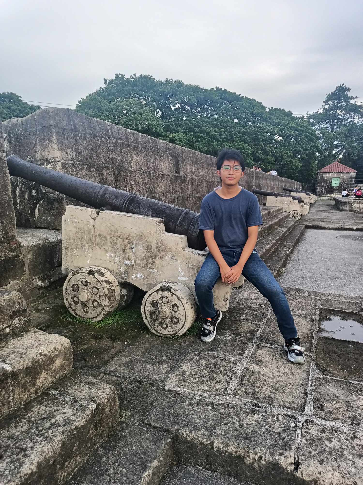

Jan Rey B. Buitre

Education
STI COLLEGE PASAY-EDSA
Degree: Bachelor of Science in Computer Science
Relevant Coursework: Advance Mobile Programming, Computer Programming 1, 2 & 3
Software Engineering, Database Management System, System Analysis and Design
Graduation Date: June 2025
SAINT ANTHONY SCHOOL
Strand: Science, Technology, Engineering and Mathematics (STEM)
Relevant Coursework: ICT-Programming
Graduation Date: May 2021
AURORA A. QUEZON ELEMENTARY SCHOOL
Relevant Subject: Arithmetic, Algebra, Science, English and Social Studies
Graduation Date: March 2014
Skills & Interest
- Programming Languages: Java, HTML, CSS, JavaScript, SQL, C#
- Software: Android Studio, Visual Studio, NetBeans, Microsoft Office
- Interest: Mobile Application Development, Web Development, Software Development
- Language: English, Filipino
Certifcates
Java Programming - English
Learn Visual Studio Code (2020)
More about me